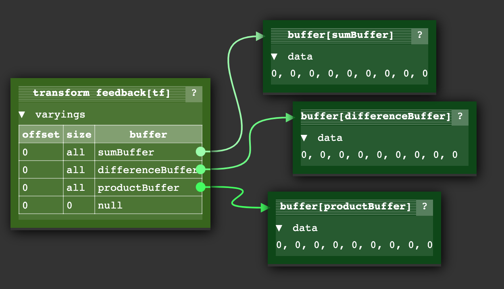
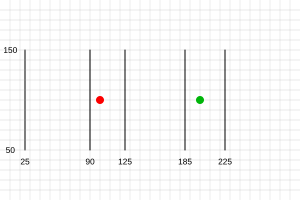

GPGPU signifie “General Purpose GPU” (GPU à usage général) et désigne l’utilisation du GPU pour autre chose que le dessin de pixels.
L’idée fondamentale pour comprendre GPGPU dans WebGL est qu’une texture n’est pas une image, c’est un tableau 2D de valeurs. Dans l’article sur les textures, nous avons couvert la lecture depuis une texture. Dans l’article sur le rendu vers une texture, nous avons couvert l’écriture vers une texture. Donc, si on réalise qu’une texture est un tableau 2D de valeurs, on peut dire qu’on a décrit un moyen de lire et d’écrire dans des tableaux 2D. De même, un tampon n’est pas juste des positions, normales, coordonnées de texture et couleurs. Ces données peuvent être n’importe quoi : des vitesses, des masses, des cours boursiers, etc. Utiliser créativement cette connaissance pour faire des calculs, c’est l’essence du GPGPU dans WebGL.
En JavaScript, il y a la fonction Array.prototype.map qui, étant donné un tableau, appelle une fonction sur chaque élément :
function multBy2(v) {
return v * 2;
}
const src = [1, 2, 3, 4, 5, 6];
const dst = src.map(multBy2);
// dst est maintenant [2, 4, 6, 8, 10, 12];
On peut considérer multBy2 comme un shader et map comme similaire à l’appel de gl.drawArrays
ou gl.drawElements. Quelques différences.
On peut simuler ça en créant notre propre fonction map :
function multBy2(v) {
return v * 2;
}
+function mapSrcToDst(src, fn, dst) {
+ for (let i = 0; i < src.length; ++i) {
+ dst[i] = fn(src[i]);
+ }
+}
const src = [1, 2, 3, 4, 5, 6];
-const dst = src.map(multBy2);
+const dst = new Array(6); // pour simuler qu'en WebGL on doit allouer une texture
+mapSrcToDst(src, multBy2, dst);
// dst est maintenant [2, 4, 6, 8, 10, 12];
outC’est assez facile à simuler :
+let outColor;
function multBy2(v) {
- return v * 2;
+ outColor = v * 2;
}
function mapSrcToDst(src, fn, dst) {
for (let i = 0; i < src.length; ++i) {
- dst[i] = fn(src[i]);
+ fn(src[i]);
+ dst[i] = outColor;
}
}
const src = [1, 2, 3, 4, 5, 6];
const dst = new Array(6); // pour simuler qu'en WebGL on doit allouer une texture
mapSrcToDst(src, multBy2, dst);
// dst est maintenant [2, 4, 6, 8, 10, 12];
En d’autres termes, ils boucle sur la destination et demandent “quelle valeur dois-je mettre ici ?”
let outColor;
function multBy2(src) {
- outColor = v * 2;
+ return function(i) {
+ outColor = src[i] * 2;
+ }
}
-function mapSrcToDst(src, fn, dst) {
- for (let i = 0; i < src.length; ++i) {
- fn(src[i]);
+function mapDst(dst, fn) {
+ for (let i = 0; i < dst.length; ++i) {
+ fn(i);
dst[i] = outColor;
}
}
const src = [1, 2, 3, 4, 5, 6];
const dst = new Array(6); // pour simuler qu'en WebGL on doit allouer une texture
mapDst(dst, multBy2(src));
// dst est maintenant [2, 4, 6, 8, 10, 12];
gl_FragCoordlet outColor;
+let gl_FragCoord;
function multBy2(src) {
- return function(i) {
- outColor = src[i] * 2;
+ return function() {
+ outColor = src[gl_FragCoord] * 2;
}
}
function mapDst(dst, fn) {
for (let i = 0; i < dst.length; ++i) {
- fn(i);
+ gl_FragCoord = i;
+ fn();
dst[i] = outColor;
}
}
const src = [1, 2, 3, 4, 5, 6];
const dst = new Array(6); // pour simuler qu'en WebGL on doit allouer une texture
mapDst(dst, multBy2(src));
// dst est maintenant [2, 4, 6, 8, 10, 12];
Supposons que notre tableau dst représente une texture 3x2 :
let outColor;
let gl_FragCoord;
function multBy2(src, across) {
return function() {
- outColor = src[gl_FragCoord] * 2;
+ outColor = src[gl_FragCoord.y * across + gl_FragCoord.x] * 2;
}
}
-function mapDst(dst, fn) {
- for (let i = 0; i < dst.length; ++i) {
- gl_FragCoord = i;
- fn();
- dst[i] = outColor;
- }
-}
function mapDst(dst, across, up, fn) {
for (let y = 0; y < up; ++y) {
for (let x = 0; x < across; ++x) {
gl_FragCoord = {x, y};
fn();
dst[y * across + x] = outColor;
}
}
}
const src = [1, 2, 3, 4, 5, 6];
const dst = new Array(6); // pour simuler qu'en WebGL on doit allouer une texture
mapDst(dst, 3, 2, multBy2(src, 3));
// dst est maintenant [2, 4, 6, 8, 10, 12];
On pourrait continuer encore. J’espère que les exemples ci-dessus vous aident à voir que le GPGPU dans WebGL est conceptuellement assez simple. Faisons-le réellement dans WebGL.
Pour comprendre le code suivant, vous devrez au minimum avoir lu l’article sur les fondamentaux, probablement l’article sur Comment ça fonctionne, l’article sur GLSL et l’article sur les textures.
const vs = `#version 300 es
in vec4 position;
void main() {
gl_Position = position;
}
`;
const fs = `#version 300 es
precision highp float;
uniform sampler2D srcTex;
out vec4 outColor;
void main() {
ivec2 texelCoord = ivec2(gl_FragCoord.xy);
vec4 value = texelFetch(srcTex, texelCoord, 0); // 0 = niveau mip 0
outColor = value * 2.0;
}
`;
const dstWidth = 3;
const dstHeight = 2;
// crée un canvas 3x2 pour 6 résultats
const canvas = document.createElement('canvas');
canvas.width = dstWidth;
canvas.height = dstHeight;
const gl = canvas.getContext('webgl2');
const program = webglUtils.createProgramFromSources(gl, [vs, fs]);
const positionLoc = gl.getAttribLocation(program, 'position');
const srcTexLoc = gl.getUniformLocation(program, 'srcTex');
// configure un quad clip space couvrant tout le canvas
const buffer = gl.createBuffer();
gl.bindBuffer(gl.ARRAY_BUFFER, buffer);
gl.bufferData(gl.ARRAY_BUFFER, new Float32Array([
-1, -1,
1, -1,
-1, 1,
-1, 1,
1, -1,
1, 1,
]), gl.STATIC_DRAW);
// Crée un vertex array object (état des attributs)
const vao = gl.createVertexArray();
gl.bindVertexArray(vao);
// configure nos attributs pour dire à WebGL comment extraire
// les données du tampon ci-dessus vers l'attribut position
gl.enableVertexAttribArray(positionLoc);
gl.vertexAttribPointer(
positionLoc,
2, // taille (nombre de composants)
gl.FLOAT, // type de données dans le tampon
false, // normaliser
0, // stride (0 = auto)
0, // offset
);
// crée notre texture source
const srcWidth = 3;
const srcHeight = 2;
const tex = gl.createTexture();
gl.bindTexture(gl.TEXTURE_2D, tex);
gl.pixelStorei(gl.UNPACK_ALIGNMENT, 1); // voir https://webglfundamentals.org/webgl/lessons/webgl-data-textures.html
gl.texImage2D(
gl.TEXTURE_2D,
0, // niveau mip
gl.R8, // format interne
srcWidth,
srcHeight,
0, // bordure
gl.RED, // format
gl.UNSIGNED_BYTE, // type
new Uint8Array([
1, 2, 3,
4, 5, 6,
]));
gl.texParameteri(gl.TEXTURE_2D, gl.TEXTURE_MIN_FILTER, gl.NEAREST);
gl.texParameteri(gl.TEXTURE_2D, gl.TEXTURE_MAG_FILTER, gl.NEAREST);
gl.texParameteri(gl.TEXTURE_2D, gl.TEXTURE_WRAP_S, gl.CLAMP_TO_EDGE);
gl.texParameteri(gl.TEXTURE_2D, gl.TEXTURE_WRAP_T, gl.CLAMP_TO_EDGE);
gl.useProgram(program);
gl.uniform1i(srcTexLoc, 0); // dit au shader que la texture src est sur l'unité de texture 0
gl.drawArrays(gl.TRIANGLES, 0, 6); // dessine 2 triangles (6 sommets)
// obtient le résultat
const results = new Uint8Array(dstWidth * dstHeight * 4);
gl.readPixels(0, 0, dstWidth, dstHeight, gl.RGBA, gl.UNSIGNED_BYTE, results);
// affiche les résultats
for (let i = 0; i < dstWidth * dstHeight; ++i) {
log(results[i * 4]);
}
et le voici en fonctionnement :
Quelques notes sur le code ci-dessus.
Nous dessinons un quad clip space -1 à +1.
Nous créons des sommets pour un quad -1 à +1 avec 2 triangles. Cela signifie, en supposant que le viewport soit correctement défini, que nous dessinerons tous les pixels de la destination. En d’autres termes, nous demanderons à notre shader de générer une valeur pour chaque élément du tableau résultat. Ce tableau dans ce cas est le canvas lui-même.
texelFetch est une fonction de texture qui cherche un seul texel dans une texture.
Elle prend 3 paramètres : le sampler, une coordonnée de texel basée sur des entiers, et le
niveau de mip. gl_FragCoord est un vec2, nous devons le convertir en ivec2 pour l’utiliser
avec texelFetch. Il n’y a pas de calcul supplémentaire tant que la texture source et la texture
destination ont la même taille, ce qui est le cas ici.
Notre shader écrit 4 valeurs par pixel.
Dans ce cas particulier, cela affecte la façon dont nous lisons la sortie. Nous demandons
RGBA/UNSIGNED_BYTE depuis readPixels
car d’autres combinaisons format/type ne sont pas supportées.
Donc nous devons regarder chaque 4ème valeur pour notre réponse.
Note : Ce serait judicieux d’essayer de profiter du fait que WebGL traite 4 valeurs à la fois pour aller encore plus vite.
Nous utilisons R8 comme format interne de notre texture.
Cela signifie que seul le canal rouge de la texture a une valeur issue de nos données.
Nos données d’entrée et de sortie (le canvas) sont des valeurs UNSIGNED_BYTE.
Cela signifie qu’on peut seulement passer et recevoir des valeurs entières entre 0 et 255. On pourrait utiliser des formats différents pour l’entrée en fournissant une texture d’un format différent. On pourrait aussi essayer de rendre vers une texture d’un format différent pour plus de plage dans les valeurs de sortie.
Dans l’exemple ci-dessus, src et dst ont la même taille. Modifions pour additionner toutes les 2
valeurs de src pour créer dst. En d’autres termes, étant donné [1, 2, 3, 4, 5, 6] en entrée,
on veut [3, 7, 11] en sortie. Et en plus, gardons la source comme données 3x2.
La formule de base pour obtenir une valeur d’un tableau 2D comme si c’était un tableau 1D est :
y = floor(indexDans1DArray / largeurDu2DArray);
x = indexDans1DArray % largeurDu2DArray;
Étant donné ça, notre fragment shader doit changer comme ceci pour additionner toutes les 2 valeurs.
#version 300 es
precision highp float;
uniform sampler2D srcTex;
uniform ivec2 dstDimensions;
out vec4 outColor;
vec4 getValueFrom2DTextureAs1DArray(sampler2D tex, ivec2 dimensions, int index) {
int y = index / dimensions.x;
int x = index % dimensions.x;
return texelFetch(tex, ivec2(x, y), 0);
}
void main() {
// calcule un index 1D dans dst
ivec2 dstPixel = ivec2(gl_FragCoord.xy);
int dstIndex = dstPixel.y * dstDimensions.x + dstPixel.x;
ivec2 srcDimensions = textureSize(srcTex, 0); // taille du mip 0
vec4 v1 = getValueFrom2DTextureAs1DArray(srcTex, srcDimensions, dstIndex * 2);
vec4 v2 = getValueFrom2DTextureAs1DArray(srcTex, srcDimensions, dstIndex * 2 + 1);
outColor = v1 + v2;
}
La fonction getValueFrom2DTextureAs1DArray est essentiellement notre fonction d’accès au tableau.
Cela signifie que ces 2 lignes :
vec4 v1 = getValueFrom2DTextureAs1DArray(srcTex, srcDimensions, dstIndex * 2.0);
vec4 v2 = getValueFrom2DTextureAs1DArray(srcTex, srcDimensions, dstIndex * 2.0 + 1.0);
signifient effectivement :
vec4 v1 = srcTexAs1DArray[dstIndex * 2.0];
vec4 v2 = setTexAs1DArray[dstIndex * 2.0 + 1.0];
En JavaScript, nous devons chercher l’emplacement de dstDimensions :
const program = webglUtils.createProgramFromSources(gl, [vs, fs]);
const positionLoc = gl.getAttribLocation(program, 'position');
const srcTexLoc = gl.getUniformLocation(program, 'srcTex');
+const dstDimensionsLoc = gl.getUniformLocation(program, 'dstDimensions');
et le définir :
gl.useProgram(program);
gl.uniform1i(srcTexLoc, 0); // dit au shader que la texture src est sur l'unité de texture 0
+gl.uniform2f(dstDimensionsLoc, dstWidth, dstHeight);
et nous devons changer la taille de la destination (le canvas) :
const dstWidth = 3;
-const dstHeight = 2;
+const dstHeight = 1;
et avec ça, le tableau résultat peut maintenant faire des calculs avec accès aléatoire dans le tableau source :
Si vous vouliez utiliser plus de tableaux en entrée, ajoutez simplement plus de textures pour mettre plus de données dans la même texture.
“Transform Feedback” est un terme fantaisiste pour la capacité d’écrire la sortie des varyings d’un vertex shader dans un ou plusieurs tampons.
L’avantage d’utiliser le transform feedback est que la sortie est 1D, donc probablement plus
facile à raisonner. C’est encore plus proche de map en JavaScript.
Prenons 2 tableaux de valeurs et sortons leur somme, leur différence et leur produit. Voici le vertex shader :
#version 300 es
in float a;
in float b;
out float sum;
out float difference;
out float product;
void main() {
sum = a + b;
difference = a - b;
product = a * b;
}
et le fragment shader est juste suffisant pour compiler :
#version 300 es
precision highp float;
void main() {
}
Pour utiliser le transform feedback, nous devons dire à WebGL quels varyings nous voulons écrire
et dans quel ordre. Nous faisons ça en appelant gl.transformFeedbackVaryings avant de lier le
programme shader. À cause de ça, nous n’allons pas utiliser notre assistant pour compiler les
shaders et lier le programme cette fois, juste pour clarifier ce que nous devons faire.
Voici le code pour compiler un shader similaire au code dans le tout premier article.
function createShader(gl, type, src) {
const shader = gl.createShader(type);
gl.shaderSource(shader, src);
gl.compileShader(shader);
if (!gl.getShaderParameter(shader, gl.COMPILE_STATUS)) {
throw new Error(gl.getShaderInfoLog(shader));
}
return shader;
}
Nous l’utiliserons pour compiler nos 2 shaders, puis les attacher et appeler
gl.transformFeedbackVaryings avant de lier :
const vShader = createShader(gl, gl.VERTEX_SHADER, vs);
const fShader = createShader(gl, gl.FRAGMENT_SHADER, fs);
const program = gl.createProgram();
gl.attachShader(program, vShader);
gl.attachShader(program, fShader);
gl.transformFeedbackVaryings(
program,
['sum', 'difference', 'product'],
gl.SEPARATE_ATTRIBS,
);
gl.linkProgram(program);
if (!gl.getProgramParameter(program, gl.LINK_STATUS)) {
throw new Error(gl.getProgramParameter(program));
}
gl.transformFeedbackVaryings prend 3 arguments : le programme, un tableau des noms des varyings
qu’on veut écrire dans l’ordre voulu. Si vous aviez un fragment shader qui faisait réellement
quelque chose, certains de vos varyings pourraient être uniquement pour le fragment shader et
n’avoir pas besoin d’être écrits. Dans notre cas, nous écrirons tous nos varyings, donc nous
passons les noms des 3. Le dernier paramètre peut prendre 1 de 2 valeurs : SEPARATE_ATTRIBS
ou INTERLEAVED_ATTRIBS.
SEPARATE_ATTRIBS signifie que chaque varying sera écrit dans un tampon différent.
INTERLEAVED_ATTRIBS signifie que tous les varyings seront écrits dans le même tampon mais
entrelacés dans l’ordre spécifié. Dans notre cas, puisque nous avons spécifié
['sum', 'difference', 'product'], si on utilisait INTERLEAVED_ATTRIBS, la sortie serait
sum0, difference0, product0, sum1, difference1, product1, sum2, difference2, product2, etc...
dans un seul tampon. Nous utilisons SEPARATE_ATTRIBS cependant, donc chaque sortie sera écrite
dans un tampon différent.
Comme pour les autres exemples, nous devons configurer des tampons pour nos attributs d’entrée :
const aLoc = gl.getAttribLocation(program, 'a');
const bLoc = gl.getAttribLocation(program, 'b');
// Crée un vertex array object (état des attributs)
const vao = gl.createVertexArray();
gl.bindVertexArray(vao);
function makeBuffer(gl, sizeOrData) {
const buf = gl.createBuffer();
gl.bindBuffer(gl.ARRAY_BUFFER, buf);
gl.bufferData(gl.ARRAY_BUFFER, sizeOrData, gl.STATIC_DRAW);
return buf;
}
function makeBufferAndSetAttribute(gl, data, loc) {
const buf = makeBuffer(gl, data);
// configure nos attributs pour dire à WebGL comment extraire
// les données du tampon ci-dessus vers l'attribut
gl.enableVertexAttribArray(loc);
gl.vertexAttribPointer(
loc,
1, // taille (nombre de composants)
gl.FLOAT, // type de données dans le tampon
false, // normaliser
0, // stride (0 = auto)
0, // offset
);
}
const a = [1, 2, 3, 4, 5, 6];
const b = [3, 6, 9, 12, 15, 18];
// met les données dans les tampons
const aBuffer = makeBufferAndSetAttribute(gl, new Float32Array(a), aLoc);
const bBuffer = makeBufferAndSetAttribute(gl, new Float32Array(b), bLoc);
Ensuite, nous devons configurer un “transform feedback”. Un “transform feedback” est un objet qui contient l’état des tampons dans lesquels nous écrirons. Alors qu’un vertex array spécifie l’état de tous les attributs d’entrée, un “transform feedback” contient l’état de tous les attributs de sortie.
Voici le code pour le configurer :
// Crée et configure un transform feedback
const tf = gl.createTransformFeedback();
gl.bindTransformFeedback(gl.TRANSFORM_FEEDBACK, tf);
// crée des tampons pour la sortie
const sumBuffer = makeBuffer(gl, a.length * 4);
const differenceBuffer = makeBuffer(gl, a.length * 4);
const productBuffer = makeBuffer(gl, a.length * 4);
// lie les tampons au transform feedback
gl.bindBufferBase(gl.TRANSFORM_FEEDBACK_BUFFER, 0, sumBuffer);
gl.bindBufferBase(gl.TRANSFORM_FEEDBACK_BUFFER, 1, differenceBuffer);
gl.bindBufferBase(gl.TRANSFORM_FEEDBACK_BUFFER, 2, productBuffer);
gl.bindTransformFeedback(gl.TRANSFORM_FEEDBACK, null);
// les tampons dans lesquels on écrit ne peuvent pas être liés ailleurs
gl.bindBuffer(gl.ARRAY_BUFFER, null); // productBuffer était encore lié à ARRAY_BUFFER, on le détache
Nous appelons bindBufferBase pour définir dans quel tampon chacune des sorties 0, 1 et 2 écrira.
Les sorties 0, 1, 2 correspondent aux noms qu’on a passés à gl.transformFeedbackVaryings lors
de la liaison du programme.
Quand nous avons terminé, le “transform feedback” que nous avons créé a cet état :

Il y a aussi une fonction bindBufferRange qui permet de spécifier une sous-plage dans un tampon
dans laquelle on écrira, mais nous ne l’utiliserons pas ici.
Pour exécuter le shader, on fait ceci :
gl.useProgram(program);
// lie notre état d'attribut d'entrée pour les tampons a et b
gl.bindVertexArray(vao);
// pas besoin d'appeler le fragment shader
gl.enable(gl.RASTERIZER_DISCARD);
gl.bindTransformFeedback(gl.TRANSFORM_FEEDBACK, tf);
gl.beginTransformFeedback(gl.POINTS);
gl.drawArrays(gl.POINTS, 0, a.length);
gl.endTransformFeedback();
gl.bindTransformFeedback(gl.TRANSFORM_FEEDBACK, null);
// réactive les fragment shaders
gl.disable(gl.RASTERIZER_DISCARD);
Nous désactivons l’appel au fragment shader. Nous lions l’objet transform feedback créé précédemment, activons le transform feedback, puis appelons draw.
Pour voir les valeurs, on peut appeler gl.getBufferSubData :
log(`a: ${a}`);
log(`b: ${b}`);
printResults(gl, sumBuffer, 'sums');
printResults(gl, differenceBuffer, 'differences');
printResults(gl, productBuffer, 'products');
function printResults(gl, buffer, label) {
const results = new Float32Array(a.length);
gl.bindBuffer(gl.ARRAY_BUFFER, buffer);
gl.getBufferSubData(
gl.ARRAY_BUFFER,
0, // offset en octets dans le tampon GPU,
results,
);
// affiche les résultats
log(`${label}: ${results}`);
}
On peut voir que ça a fonctionné. Nous avons fait calculer par le GPU la somme, la différence et le produit des valeurs ‘a’ et ‘b’ que nous avons passées.
Note : vous pourriez trouver cet exemple de diagramme d’état avec transform feedback utile pour visualiser ce qu’est un “transform feedback”. Ce n’est pas le même exemple qu’ici. Le vertex shader utilisé avec le transform feedback génère des positions et des couleurs pour un cercle de points.
Disons que vous avez un système de particules très simple. Chaque particule a juste une position et une vitesse, et si elle sort d’un bord de l’écran, elle réapparaît de l’autre côté.
Étant donné la plupart des autres articles de ce site, vous mettriez à jour les positions des particules en JavaScript :
for (const particle of particles) {
particle.pos.x = (particle.pos.x + particle.velocity.x) % canvas.width;
particle.pos.y = (particle.pos.y + particle.velocity.y) % canvas.height;
}
puis vous dessineriez les particules soit une par une :
useProgram (particleShader)
configure les attributs de particule
pour chaque particule
définit les uniforms
dessine la particule
Ou vous pourriez uploader toutes les nouvelles positions de particules :
bindBuffer(..., particlePositionBuffer)
bufferData(..., latestParticlePositions, ...)
useProgram (particleShader)
configure les attributs de particule
définit les uniforms
dessine les particules
En utilisant l’exemple de transform feedback ci-dessus, nous pourrions créer un tampon avec la vitesse de chaque particule. Puis nous pourrions créer 2 tampons pour les positions. Nous utiliserions le transform feedback pour ajouter la vitesse à un tampon de position et l’écrire dans l’autre tampon de position. Puis nous dessinerions avec les nouvelles positions. A la prochaine image, nous lirions depuis le tampon avec les nouvelles positions et écririons dans l’autre tampon pour générer des positions encore plus récentes.
Voici le vertex shader pour mettre à jour les positions des particules :
#version 300 es
in vec2 oldPosition;
in vec2 velocity;
uniform float deltaTime;
uniform vec2 canvasDimensions;
out vec2 newPosition;
vec2 euclideanModulo(vec2 n, vec2 m) {
return mod(mod(n, m) + m, m);
}
void main() {
newPosition = euclideanModulo(
oldPosition + velocity * deltaTime,
canvasDimensions);
}
Pour dessiner les particules, nous utiliserons juste un simple vertex shader :
#version 300 es
in vec4 position;
uniform mat4 matrix;
void main() {
// fait le calcul matriciel habituel
gl_Position = matrix * position;
gl_PointSize = 10.0;
}
Transformons le code pour créer et lier un programme en une fonction que nous pouvons utiliser pour les deux shaders :
function createProgram(gl, shaderSources, transformFeedbackVaryings) {
const program = gl.createProgram();
[gl.VERTEX_SHADER, gl.FRAGMENT_SHADER].forEach((type, ndx) => {
const shader = createShader(gl, type, shaderSources[ndx]);
gl.attachShader(program, shader);
});
if (transformFeedbackVaryings) {
gl.transformFeedbackVaryings(
program,
transformFeedbackVaryings,
gl.SEPARATE_ATTRIBS,
);
}
gl.linkProgram(program);
if (!gl.getProgramParameter(program, gl.LINK_STATUS)) {
throw new Error(gl.getProgramParameter(program));
}
return program;
}
puis l’utiliser pour compiler les shaders, un avec un varying de transform feedback.
const updatePositionProgram = createProgram(
gl, [updatePositionVS, updatePositionFS], ['newPosition']);
const drawParticlesProgram = createProgram(
gl, [drawParticlesVS, drawParticlesFS]);
Comme d’habitude, nous devons chercher les emplacements :
const updatePositionPrgLocs = {
oldPosition: gl.getAttribLocation(updatePositionProgram, 'oldPosition'),
velocity: gl.getAttribLocation(updatePositionProgram, 'velocity'),
canvasDimensions: gl.getUniformLocation(updatePositionProgram, 'canvasDimensions'),
deltaTime: gl.getUniformLocation(updatePositionProgram, 'deltaTime'),
};
const drawParticlesProgLocs = {
position: gl.getAttribLocation(drawParticlesProgram, 'position'),
matrix: gl.getUniformLocation(drawParticlesProgram, 'matrix'),
};
Maintenant, créons des positions et vitesses aléatoires :
// crée des positions et vitesses aléatoires.
const rand = (min, max) => {
if (max === undefined) {
max = min;
min = 0;
}
return Math.random() * (max - min) + min;
};
const numParticles = 200;
const createPoints = (num, ranges) =>
new Array(num).fill(0).map(_ => ranges.map(range => rand(...range))).flat();
const positions = new Float32Array(createPoints(numParticles, [[canvas.width], [canvas.height]]));
const velocities = new Float32Array(createPoints(numParticles, [[-300, 300], [-300, 300]]));
Puis nous les mettons dans des tampons.
function makeBuffer(gl, sizeOrData, usage) {
const buf = gl.createBuffer();
gl.bindBuffer(gl.ARRAY_BUFFER, buf);
gl.bufferData(gl.ARRAY_BUFFER, sizeOrData, usage);
return buf;
}
const position1Buffer = makeBuffer(gl, positions, gl.DYNAMIC_DRAW);
const position2Buffer = makeBuffer(gl, positions, gl.DYNAMIC_DRAW);
const velocityBuffer = makeBuffer(gl, velocities, gl.STATIC_DRAW);
Notez que nous avons passé gl.DYNAMIC_DRAW à gl.bufferData pour les 2 tampons de position
puisque nous les mettrons souvent à jour. C’est juste un indice à WebGL pour l’optimisation.
Si cela a un effet sur les performances, c’est à WebGL de décider.
Nous avons besoin de 4 vertex arrays.
position1Buffer et velocity lors de la mise à jour des positionsposition2Buffer et velocity lors de la mise à jour des positionsposition1Buffer lors du dessinposition2Buffer lors du dessinfunction makeVertexArray(gl, bufLocPairs) {
const va = gl.createVertexArray();
gl.bindVertexArray(va);
for (const [buffer, loc] of bufLocPairs) {
gl.bindBuffer(gl.ARRAY_BUFFER, buffer);
gl.enableVertexAttribArray(loc);
gl.vertexAttribPointer(
loc, // emplacement de l'attribut
2, // nombre d'éléments
gl.FLOAT, // type de données
false, // normaliser
0, // stride (0 = auto)
0, // offset
);
}
return va;
}
const updatePositionVA1 = makeVertexArray(gl, [
[position1Buffer, updatePositionPrgLocs.oldPosition],
[velocityBuffer, updatePositionPrgLocs.velocity],
]);
const updatePositionVA2 = makeVertexArray(gl, [
[position2Buffer, updatePositionPrgLocs.oldPosition],
[velocityBuffer, updatePositionPrgLocs.velocity],
]);
const drawVA1 = makeVertexArray(
gl, [[position1Buffer, drawParticlesProgLocs.position]]);
const drawVA2 = makeVertexArray(
gl, [[position2Buffer, drawParticlesProgLocs.position]]);
Nous créons ensuite 2 objets transform feedback.
position1Bufferposition2Bufferfunction makeTransformFeedback(gl, buffer) {
const tf = gl.createTransformFeedback();
gl.bindTransformFeedback(gl.TRANSFORM_FEEDBACK, tf);
gl.bindBufferBase(gl.TRANSFORM_FEEDBACK_BUFFER, 0, buffer);
return tf;
}
const tf1 = makeTransformFeedback(gl, position1Buffer);
const tf2 = makeTransformFeedback(gl, position2Buffer);
Lors de l’utilisation du transform feedback, il est important de détacher les tampons des autres
points de liaison. ARRAY_BUFFER a encore le dernier tampon dans lequel on a mis des données lié.
TRANSFORM_FEEDBACK_BUFFER est défini quand on appelle gl.bindBufferBase. C’est un peu
déroutant. Appeler gl.bindBufferBase avec TRANSFORM_FEEDBACK_BUFFER lie en fait le tampon
à 2 endroits. D’une part, au point de liaison indexé dans l’objet transform feedback. De l’autre,
à une sorte de point de liaison global appelé TRANSFORM_FEEDBACK_BUFFER.
// détache les restes
gl.bindBuffer(gl.ARRAY_BUFFER, null);
gl.bindBuffer(gl.TRANSFORM_FEEDBACK_BUFFER, null);
Pour pouvoir facilement échanger les tampons de mise à jour et de dessin, nous allons configurer ces 2 objets :
let current = {
updateVA: updatePositionVA1, // lit depuis position1
tf: tf2, // écrit dans position2
drawVA: drawVA2, // dessine avec position2
};
let next = {
updateVA: updatePositionVA2, // lit depuis position2
tf: tf1, // écrit dans position1
drawVA: drawVA1, // dessine avec position1
};
Ensuite, nous faisons une boucle de rendu, d’abord nous mettons à jour les positions en utilisant le transform feedback.
let then = 0;
function render(time) {
// convertit en secondes
time *= 0.001;
// soustrait le temps précédent du temps courant
const deltaTime = time - then;
// mémorise le temps courant pour la prochaine image.
then = time;
webglUtils.resizeCanvasToDisplaySize(gl.canvas);
gl.clear(gl.COLOR_BUFFER_BIT);
// calcule les nouvelles positions
gl.useProgram(updatePositionProgram);
gl.bindVertexArray(current.updateVA);
gl.uniform2f(updatePositionPrgLocs.canvasDimensions, gl.canvas.width, gl.canvas.height);
gl.uniform1f(updatePositionPrgLocs.deltaTime, deltaTime);
// désactive le fragment shader
gl.enable(gl.RASTERIZER_DISCARD);
gl.bindTransformFeedback(gl.TRANSFORM_FEEDBACK, current.tf);
gl.beginTransformFeedback(gl.POINTS);
gl.drawArrays(gl.POINTS, 0, numParticles);
gl.endTransformFeedback();
gl.bindTransformFeedback(gl.TRANSFORM_FEEDBACK, null);
// réactive les fragment shaders
gl.disable(gl.RASTERIZER_DISCARD);
puis dessine les particules :
// dessine maintenant les particules.
gl.useProgram(drawParticlesProgram);
gl.bindVertexArray(current.drawVA);
gl.viewport(0, 0, gl.canvas.width, gl.canvas.height);
gl.uniformMatrix4fv(
drawParticlesProgLocs.matrix,
false,
m4.orthographic(0, gl.canvas.width, 0, gl.canvas.height, -1, 1));
gl.drawArrays(gl.POINTS, 0, numParticles);
et enfin échange current et next pour que la prochaine image utilise les positions récentes
pour en générer de nouvelles :
// échange le tampon depuis lequel on lit
// et celui dans lequel on écrit
{
const temp = current;
current = next;
next = temp;
}
requestAnimationFrame(render);
}
requestAnimationFrame(render);
Et avec ça, nous avons un système de particules simple basé sur le GPU.
Je ne suis pas sûr que ce soit un bon exemple, mais c’est celui que j’ai écrit. Je dis que ce n’est peut-être pas bon parce que je soupçonne qu’il existe de meilleurs algorithmes pour trouver la ligne la plus proche d’un point que la vérification brute force de chaque ligne avec le point. Par exemple, divers algorithmes de partitionnement d’espace pourraient vous permettre de rejeter facilement 95% des points et donc d’être plus rapides. Cet exemple montre quand même probablement certaines techniques du GPGPU.
Le problème : Nous avons 500 points et 1000 segments de ligne. Pour chaque point, trouver quel segment de ligne en est le plus proche. La méthode brute force est :
pour chaque point
minDistanceJusquIci = MAX_VALUE
pour chaque segment de ligne
calcule la distance du point au segment de ligne
si distance < minDistanceJusquIci
minDistanceJusquIci = distance
ligneLaPlusProche = segment de ligne
Pour 500 points vérifiant chacun 1000 lignes, ça fait 500 000 vérifications. Les GPU modernes ont des centaines ou milliers de cœurs, donc si on pouvait faire ça sur le GPU, on pourrait potentiellement aller des centaines ou milliers de fois plus vite.
Cette fois, bien qu’on puisse mettre les points dans un tampon comme on l’a fait pour les particules, on ne peut pas mettre les segments de ligne dans un tampon. Les tampons fournissent leurs données via les attributs. Cela signifie qu’on ne peut pas accéder aléatoirement à n’importe quelle valeur à la demande, les valeurs sont plutôt assignées à l’attribut hors du contrôle du shader.
Donc, nous devons mettre les positions des lignes dans une texture, qui comme mentionné ci-dessus est un autre mot pour un tableau 2D, bien qu’on puisse toujours traiter ce tableau 2D comme un tableau 1D si on veut.
Voici le vertex shader qui trouve la ligne la plus proche pour un seul point. C’est exactement l’algorithme brute force ci-dessus :
const closestLineVS = `#version 300 es
in vec3 point;
uniform sampler2D linesTex;
uniform int numLineSegments;
flat out int closestNdx;
vec4 getAs1D(sampler2D tex, ivec2 dimensions, int index) {
int y = index / dimensions.x;
int x = index % dimensions.x;
return texelFetch(tex, ivec2(x, y), 0);
}
// d'après https://stackoverflow.com/a/6853926/128511
// a est le point, b,c est le segment de ligne
float distanceFromPointToLine(in vec3 a, in vec3 b, in vec3 c) {
vec3 ba = a - b;
vec3 bc = c - b;
float d = dot(ba, bc);
float len = length(bc);
float param = 0.0;
if (len != 0.0) {
param = clamp(d / (len * len), 0.0, 1.0);
}
vec3 r = b + bc * param;
return distance(a, r);
}
void main() {
ivec2 linesTexDimensions = textureSize(linesTex, 0);
// trouve le segment de ligne le plus proche
float minDist = 10000000.0;
int minIndex = -1;
for (int i = 0; i < numLineSegments; ++i) {
vec3 lineStart = getAs1D(linesTex, linesTexDimensions, i * 2).xyz;
vec3 lineEnd = getAs1D(linesTex, linesTexDimensions, i * 2 + 1).xyz;
float dist = distanceFromPointToLine(point, lineStart, lineEnd);
if (dist < minDist) {
minDist = dist;
minIndex = i;
}
}
closestNdx = minIndex;
}
`;
J’ai renommé getValueFrom2DTextureAs1DArray en getAs1D juste pour raccourcir et rendre
certaines lignes plus lisibles. Sinon, c’est une implémentation assez directe de l’algorithme
brute force ci-dessus.
point est le point courant. linesTex contient les points des segments de ligne par paires :
premier point suivi du second point.
D’abord, créons des données de test. Voici 2 points et 5 lignes. Ils sont remplis avec 0, 0 car chacun sera stocké dans une texture RGBA.
const points = [
100, 100,
200, 100,
];
const lines = [
25, 50,
25, 150,
90, 50,
90, 150,
125, 50,
125, 150,
185, 50,
185, 150,
225, 50,
225, 150,
];
const numPoints = points.length / 2;
const numLineSegments = lines.length / 2 / 2;
Si on trace ça, ça ressemble à ceci :

Les lignes sont numérotées de 0 à 4 de gauche à droite, donc si notre code fonctionne, le premier point (rouge) devrait obtenir la valeur 1 comme ligne la plus proche, le second point (vert) devrait obtenir la valeur 3.
Mettons les points dans un tampon et créons aussi un tampon pour stocker l’index le plus proche calculé pour chacun :
const closestNdxBuffer = makeBuffer(gl, points.length * 4, gl.STATIC_DRAW);
const pointsBuffer = makeBuffer(gl, new Float32Array(points), gl.DYNAMIC_DRAW);
et créons une texture pour stocker tous les points des extrémités des lignes.
function createDataTexture(gl, data, numComponents, internalFormat, format, type) {
const numElements = data.length / numComponents;
// calcule une taille qui contiendra toutes nos données
const width = Math.ceil(Math.sqrt(numElements));
const height = Math.ceil(numElements / width);
const bin = new Float32Array(width * height * numComponents);
bin.set(data);
const tex = gl.createTexture();
gl.bindTexture(gl.TEXTURE_2D, tex);
gl.texImage2D(
gl.TEXTURE_2D,
0, // niveau mip
internalFormat,
width,
height,
0, // bordure
format,
type,
bin,
);
gl.texParameteri(gl.TEXTURE_2D, gl.TEXTURE_MIN_FILTER, gl.NEAREST);
gl.texParameteri(gl.TEXTURE_2D, gl.TEXTURE_MAG_FILTER, gl.NEAREST);
gl.texParameteri(gl.TEXTURE_2D, gl.TEXTURE_WRAP_S, gl.CLAMP_TO_EDGE);
gl.texParameteri(gl.TEXTURE_2D, gl.TEXTURE_WRAP_T, gl.CLAMP_TO_EDGE);
return {tex, dimensions: [width, height]};
}
const {tex: linesTex, dimensions: linesTexDimensions} =
createDataTexture(gl, lines, 2, gl.RG32F, gl.RG, gl.FLOAT);
Dans ce cas, nous laissons le code choisir les dimensions de la texture et la rembourrer. Par exemple, si on lui donnait un tableau avec 7 entrées, il le mettrait dans une texture 3x3. Il retourne à la fois la texture et les dimensions choisies. Pourquoi le laisser choisir les dimensions ? Parce que les textures ont une dimension maximale.
Idéalement, on aimerait juste regarder nos données comme un tableau 1D de positions, un tableau 1D de points de lignes, etc. On pourrait déclarer une texture comme Nx1. Malheureusement, les GPU ont une dimension maximale qui peut être aussi basse que 1024 ou 2048. Si la limite était 1024 et qu’on avait besoin de 1025 valeurs dans notre tableau, on devrait mettre les données dans une texture d’environ 512x2. En mettant les données dans un carré, on n’atteindra pas la limite tant qu’on n’atteint pas le carré de la dimension maximale de texture. Pour une limite de dimension de 1024, cela permettrait des tableaux de plus d’un million de valeurs.
Compilons ensuite le shader et cherchons les emplacements :
const closestLinePrg = createProgram(
gl, [closestLineVS, closestLineFS], ['closestNdx']);
const closestLinePrgLocs = {
point: gl.getAttribLocation(closestLinePrg, 'point'),
linesTex: gl.getUniformLocation(closestLinePrg, 'linesTex'),
numLineSegments: gl.getUniformLocation(closestLinePrg, 'numLineSegments'),
};
Et créons un vertex array pour les points :
function makeVertexArray(gl, bufLocPairs) {
const va = gl.createVertexArray();
gl.bindVertexArray(va);
for (const [buffer, loc] of bufLocPairs) {
gl.bindBuffer(gl.ARRAY_BUFFER, buffer);
gl.enableVertexAttribArray(loc);
gl.vertexAttribPointer(
loc, // emplacement de l'attribut
2, // nombre d'éléments
gl.FLOAT, // type de données
false, // normaliser
0, // stride (0 = auto)
0, // offset
);
}
return va;
}
const closestLinesVA = makeVertexArray(gl, [
[pointsBuffer, closestLinePrgLocs.point],
]);
Maintenant nous devons configurer un transform feedback pour nous permettre d’écrire les résultats
dans le closestNdxBuffer.
function makeTransformFeedback(gl, buffer) {
const tf = gl.createTransformFeedback();
gl.bindTransformFeedback(gl.TRANSFORM_FEEDBACK, tf);
gl.bindBufferBase(gl.TRANSFORM_FEEDBACK_BUFFER, 0, buffer);
return tf;
}
const closestNdxTF = makeTransformFeedback(gl, closestNdxBuffer);
Avec tout ça configuré, on peut faire le rendu :
// calcule les lignes les plus proches
gl.bindVertexArray(closestLinesVA);
gl.useProgram(closestLinePrg);
gl.uniform1i(closestLinePrgLocs.linesTex, 0);
gl.uniform1i(closestLinePrgLocs.numLineSegments, numLineSegments);
// désactive le fragment shader
gl.enable(gl.RASTERIZER_DISCARD);
gl.bindTransformFeedback(gl.TRANSFORM_FEEDBACK, closestNdxTF);
gl.beginTransformFeedback(gl.POINTS);
gl.drawArrays(gl.POINTS, 0, numPoints);
gl.endTransformFeedback();
gl.bindTransformFeedback(gl.TRANSFORM_FEEDBACK, null);
// réactive les fragment shaders
gl.disable(gl.RASTERIZER_DISCARD);
et finalement lit le résultat :
// obtient les résultats.
{
const results = new Int32Array(numPoints);
gl.bindBuffer(gl.ARRAY_BUFFER, closestNdxBuffer);
gl.getBufferSubData(gl.ARRAY_BUFFER, 0, results);
log(results);
}
Si on l’exécute :
On devrait obtenir le résultat attendu de [1, 3].
Lire les données depuis le GPU est lent. Disons qu’on voulait visualiser les résultats. Ce serait assez simple de lire ces résultats dans JavaScript et de les dessiner, mais qu’en est-il sans les lire dans JavaScript ? Utilisons les données telles quelles et dessinons les résultats ?
D’abord, dessiner les points est relativement facile. C’est la même chose que l’exemple de particules. Dessinons chaque point dans une couleur différente pour pouvoir mettre en surbrillance la ligne la plus proche dans la même couleur.
const drawPointsVS = `#version 300 es
in vec4 point;
uniform float numPoints;
uniform mat4 matrix;
out vec4 v_color;
// convertit teinte, saturation et valeur chacun dans la plage 0 à 1
// en rgb. c = couleur, c.x = teinte, c.y = saturation, c.z = valeur
vec3 hsv2rgb(vec3 c) {
c = vec3(c.x, clamp(c.yz, 0.0, 1.0));
vec4 K = vec4(1.0, 2.0 / 3.0, 1.0 / 3.0, 3.0);
vec3 p = abs(fract(c.xxx + K.xyz) * 6.0 - K.www);
return c.z * mix(K.xxx, clamp(p - K.xxx, 0.0, 1.0), c.y);
}
void main() {
gl_Position = matrix * point;
gl_PointSize = 10.0;
float hue = float(gl_VertexID) / numPoints;
v_color = vec4(hsv2rgb(vec3(hue, 1, 1)), 1);
}
`;
const drawClosestLinesPointsFS = `#version 300 es
precision highp float;
in vec4 v_color;
out vec4 outColor;
void main() {
outColor = v_color;
}`;
Plutôt que de passer des couleurs, nous les générons en utilisant hsv2rgb et en lui passant une
teinte de 0 à 1. Pour 500 points, il n’y aurait aucun moyen facile de distinguer les lignes, mais
pour environ 10 points, nous devrions pouvoir les distinguer.
Nous passons la couleur générée à un simple fragment shader :
const drawClosestPointsLinesFS = `
precision highp float;
varying vec4 v_color;
void main() {
gl_FragColor = v_color;
}
`;
Pour dessiner toutes les lignes, même celles qui ne sont proches d’aucun point, c’est presque la même chose sauf qu’on ne génère pas de couleur. Dans ce cas, on utilise juste une couleur codée en dur.
const drawLinesVS = `#version 300 es
uniform sampler2D linesTex;
uniform mat4 matrix;
out vec4 v_color;
vec4 getAs1D(sampler2D tex, ivec2 dimensions, int index) {
int y = index / dimensions.x;
int x = index % dimensions.x;
return texelFetch(tex, ivec2(x, y), 0);
}
void main() {
ivec2 linesTexDimensions = textureSize(linesTex, 0);
// extrait la position de la texture
vec4 position = getAs1D(linesTex, linesTexDimensions, gl_VertexID);
// fait le calcul matriciel habituel
gl_Position = matrix * vec4(position.xy, 0, 1);
// juste pour utiliser le même fragment shader
v_color = vec4(0.8, 0.8, 0.8, 1);
}
`;
Nous n’avons pas d’attributs. Nous utilisons juste gl_VertexID comme nous l’avons couvert dans
l’article sur le dessin sans données.
Enfin, dessiner les lignes les plus proches fonctionne comme ceci :
const drawClosestLinesVS = `#version 300 es
in int closestNdx;
uniform float numPoints;
uniform sampler2D linesTex;
uniform mat4 matrix;
out vec4 v_color;
vec4 getAs1D(sampler2D tex, ivec2 dimensions, int index) {
int y = index / dimensions.x;
int x = index % dimensions.x;
return texelFetch(tex, ivec2(x, y), 0);
}
// convertit teinte, saturation et valeur chacun dans la plage 0 à 1
// en rgb. c = couleur, c.x = teinte, c.y = saturation, c.z = valeur
vec3 hsv2rgb(vec3 c) {
c = vec3(c.x, clamp(c.yz, 0.0, 1.0));
vec4 K = vec4(1.0, 2.0 / 3.0, 1.0 / 3.0, 3.0);
vec3 p = abs(fract(c.xxx + K.xyz) * 6.0 - K.www);
return c.z * mix(K.xxx, clamp(p - K.xxx, 0.0, 1.0), c.y);
}
void main() {
ivec2 linesTexDimensions = textureSize(linesTex, 0);
// extrait la position de la texture
int linePointId = closestNdx * 2 + gl_VertexID % 2;
vec4 position = getAs1D(linesTex, linesTexDimensions, linePointId);
// fait le calcul matriciel habituel
gl_Position = matrix * vec4(position.xy, 0, 1);
int pointId = gl_InstanceID;
float hue = float(pointId) / numPoints;
v_color = vec4(hsv2rgb(vec3(hue, 1, 1)), 1);
}
`;
Nous passons closestNdx comme attribut. Ce sont les résultats que nous avons générés. En
l’utilisant, nous pouvons chercher une ligne spécifique. Nous devons dessiner 2 points par ligne,
donc nous utiliserons le dessin instancié pour dessiner 2 points
par closestNdx. Nous pouvons ensuite utiliser gl_VertexID % 2 pour choisir le point de départ
ou de fin.
Enfin, nous calculons une couleur en utilisant la même méthode que pour les points afin qu’ils correspondent.
Nous devons compiler tous ces nouveaux programmes de shader et chercher les emplacements :
const closestLinePrg = createProgram(
gl, [closestLineVS, closestLineFS], ['closestNdx']);
+const drawLinesPrg = createProgram(
+ gl, [drawLinesVS, drawClosestLinesPointsFS]);
+const drawClosestLinesPrg = createProgram(
+ gl, [drawClosestLinesVS, drawClosestLinesPointsFS]);
+const drawPointsPrg = createProgram(
+ gl, [drawPointsVS, drawClosestLinesPointsFS]);
const closestLinePrgLocs = {
point: gl.getAttribLocation(closestLinePrg, 'point'),
linesTex: gl.getUniformLocation(closestLinePrg, 'linesTex'),
numLineSegments: gl.getUniformLocation(closestLinePrg, 'numLineSegments'),
};
+const drawLinesPrgLocs = {
+ linesTex: gl.getUniformLocation(drawLinesPrg, 'linesTex'),
+ matrix: gl.getUniformLocation(drawLinesPrg, 'matrix'),
+};
+const drawClosestLinesPrgLocs = {
+ closestNdx: gl.getAttribLocation(drawClosestLinesPrg, 'closestNdx'),
+ linesTex: gl.getUniformLocation(drawClosestLinesPrg, 'linesTex'),
+ matrix: gl.getUniformLocation(drawClosestLinesPrg, 'matrix'),
+ numPoints: gl.getUniformLocation(drawClosestLinesPrg, 'numPoints'),
+};
+const drawPointsPrgLocs = {
+ point: gl.getAttribLocation(drawPointsPrg, 'point'),
+ matrix: gl.getUniformLocation(drawPointsPrg, 'matrix'),
+ numPoints: gl.getUniformLocation(drawPointsPrg, 'numPoints'),
+};
Nous avons besoin de vertex arrays pour dessiner les points et les lignes les plus proches.
const closestLinesVA = makeVertexArray(gl, [
[pointsBuffer, closestLinePrgLocs.point],
]);
+const drawClosestLinesVA = gl.createVertexArray();
+gl.bindVertexArray(drawClosestLinesVA);
+gl.bindBuffer(gl.ARRAY_BUFFER, closestNdxBuffer);
+gl.enableVertexAttribArray(drawClosestLinesPrgLocs.closestNdx);
+gl.vertexAttribIPointer(drawClosestLinesPrgLocs.closestNdx, 1, gl.INT, 0, 0);
+gl.vertexAttribDivisor(drawClosestLinesPrgLocs.closestNdx, 1);
+
+const drawPointsVA = makeVertexArray(gl, [
+ [pointsBuffer, drawPointsPrgLocs.point],
+]);
Donc, au moment du rendu, nous calculons les résultats comme avant mais nous ne les cherchons pas
avec getBufferSubData. À la place, nous les passons simplement aux shaders appropriés.
D’abord, nous dessinons toutes les lignes en gris :
// dessine toutes les lignes en gris
gl.bindFramebuffer(gl.FRAMEBUFFER, null);
gl.viewport(0, 0, gl.canvas.width, gl.canvas.height);
gl.bindVertexArray(null);
gl.useProgram(drawLinesPrg);
// lie la texture des lignes à l'unité de texture 0
gl.activeTexture(gl.TEXTURE0);
gl.bindTexture(gl.TEXTURE_2D, linesTex);
// dit au shader d'utiliser la texture sur l'unité de texture 0
gl.uniform1i(drawLinesPrgLocs.linesTex, 0);
gl.uniformMatrix4fv(drawLinesPrgLocs.matrix, false, matrix);
gl.drawArrays(gl.LINES, 0, numLineSegments * 2);
Puis nous dessinons toutes les lignes les plus proches :
gl.bindVertexArray(drawClosestLinesVA);
gl.useProgram(drawClosestLinesPrg);
gl.activeTexture(gl.TEXTURE0);
gl.bindTexture(gl.TEXTURE_2D, linesTex);
gl.uniform1i(drawClosestLinesPrgLocs.linesTex, 0);
gl.uniform1f(drawClosestLinesPrgLocs.numPoints, numPoints);
gl.uniformMatrix4fv(drawClosestLinesPrgLocs.matrix, false, matrix);
gl.drawArraysInstanced(gl.LINES, 0, 2, numPoints);
et finalement nous dessinons chaque point :
gl.bindVertexArray(drawPointsVA);
gl.useProgram(drawPointsPrg);
gl.uniform1f(drawPointsPrgLocs.numPoints, numPoints);
gl.uniformMatrix4fv(drawPointsPrgLocs.matrix, false, matrix);
gl.drawArrays(gl.POINTS, 0, numPoints);
Avant de l’exécuter, ajoutons encore une chose. Ajoutons plus de points et de lignes :
-const points = [
- 100, 100,
- 200, 100,
-];
-const lines = [
- 25, 50,
- 25, 150,
- 90, 50,
- 90, 150,
- 125, 50,
- 125, 150,
- 185, 50,
- 185, 150,
- 225, 50,
- 225, 150,
-];
+function createPoints(numPoints, ranges) {
+ const points = [];
+ for (let i = 0; i < numPoints; ++i) {
+ points.push(...ranges.map(range => r(...range)));
+ }
+ return points;
+}
+
+const r = (min, max) => min + Math.random() * (max - min);
+
+const points = createPoints(8, [[0, gl.canvas.width], [0, gl.canvas.height]]);
+const lines = createPoints(125 * 2, [[0, gl.canvas.width], [0, gl.canvas.height]]);
const numPoints = points.length / 2;
const numLineSegments = lines.length / 2 / 2;
et si on l’exécute :
Vous pouvez augmenter le nombre de points et de lignes, mais à partir d’un certain point, vous ne pourrez plus dire quels points correspondent à quelles lignes. Avec un nombre plus petit, vous pouvez au moins visuellement vérifier que ça fonctionne.
Pour le plaisir, combinons l’exemple de particules et cet exemple. Nous utiliserons les techniques utilisées pour mettre à jour les positions des particules pour mettre à jour les points. Pour mettre à jour les extrémités des lignes, nous ferons ce que nous avons fait au début et écrirons les résultats dans une texture.
Pour ça, copions le vertex shader updatePositionFS de l’exemple de particules. Pour les lignes,
puisque leurs valeurs sont stockées dans une texture, nous devons déplacer leurs points dans un
fragment shader :
const updateLinesVS = `#version 300 es
in vec4 position;
void main() {
gl_Position = position;
}
`;
const updateLinesFS = `#version 300 es
precision highp float;
uniform sampler2D linesTex;
uniform sampler2D velocityTex;
uniform vec2 canvasDimensions;
uniform float deltaTime;
out vec4 outColor;
vec2 euclideanModulo(vec2 n, vec2 m) {
return mod(mod(n, m) + m, m);
}
void main() {
// calcule les coordonnées de texel depuis gl_FragCoord;
ivec2 texelCoord = ivec2(gl_FragCoord.xy);
vec2 position = texelFetch(linesTex, texelCoord, 0).xy;
vec2 velocity = texelFetch(velocityTex, texelCoord, 0).xy;
vec2 newPosition = euclideanModulo(position + velocity * deltaTime, canvasDimensions);
outColor = vec4(newPosition, 0, 1);
}
`;
On peut alors compiler les 2 nouveaux shaders pour mettre à jour les points et les lignes et chercher les emplacements :
+const updatePositionPrg = createProgram(
+ gl, [updatePositionVS, updatePositionFS], ['newPosition']);
+const updateLinesPrg = createProgram(
+ gl, [updateLinesVS, updateLinesFS]);
const closestLinePrg = createProgram(
gl, [closestLineVS, closestLineFS], ['closestNdx']);
const drawLinesPrg = createProgram(
gl, [drawLinesVS, drawClosestLinesPointsFS]);
const drawClosestLinesPrg = createProgram(
gl, [drawClosestLinesVS, drawClosestLinesPointsFS]);
const drawPointsPrg = createProgram(
gl, [drawPointsVS, drawClosestLinesPointsFS]);
+const updatePositionPrgLocs = {
+ oldPosition: gl.getAttribLocation(updatePositionPrg, 'oldPosition'),
+ velocity: gl.getAttribLocation(updatePositionPrg, 'velocity'),
+ canvasDimensions: gl.getUniformLocation(updatePositionPrg, 'canvasDimensions'),
+ deltaTime: gl.getUniformLocation(updatePositionPrg, 'deltaTime'),
+};
+const updateLinesPrgLocs = {
+ position: gl.getAttribLocation(updateLinesPrg, 'position'),
+ linesTex: gl.getUniformLocation(updateLinesPrg, 'linesTex'),
+ velocityTex: gl.getUniformLocation(updateLinesPrg, 'velocityTex'),
+ canvasDimensions: gl.getUniformLocation(updateLinesPrg, 'canvasDimensions'),
+ deltaTime: gl.getUniformLocation(updateLinesPrg, 'deltaTime'),
+};
const closestLinePrgLocs = {
point: gl.getAttribLocation(closestLinePrg, 'point'),
linesTex: gl.getUniformLocation(closestLinePrg, 'linesTex'),
numLineSegments: gl.getUniformLocation(closestLinePrg, 'numLineSegments'),
};
const drawLinesPrgLocs = {
linesTex: gl.getUniformLocation(drawLinesPrg, 'linesTex'),
matrix: gl.getUniformLocation(drawLinesPrg, 'matrix'),
};
const drawClosestLinesPrgLocs = {
closestNdx: gl.getAttribLocation(drawClosestLinesPrg, 'closestNdx'),
linesTex: gl.getUniformLocation(drawClosestLinesPrg, 'linesTex'),
matrix: gl.getUniformLocation(drawClosestLinesPrg, 'matrix'),
numPoints: gl.getUniformLocation(drawClosestLinesPrg, 'numPoints'),
};
const drawPointsPrgLocs = {
point: gl.getAttribLocation(drawPointsPrg, 'point'),
matrix: gl.getUniformLocation(drawPointsPrg, 'matrix'),
numPoints: gl.getUniformLocation(drawPointsPrg, 'numPoints'),
};
Nous devons générer des vitesses à la fois pour les points et les lignes :
const points = createPoints(8, [[0, gl.canvas.width], [0, gl.canvas.height]]);
const lines = createPoints(125 * 2, [[0, gl.canvas.width], [0, gl.canvas.height]]);
const numPoints = points.length / 2;
const numLineSegments = lines.length / 2 / 2;
+const pointVelocities = createPoints(numPoints, [[-20, 20], [-20, 20]]);
+const lineVelocities = createPoints(numLineSegments * 2, [[-20, 20], [-20, 20]]);
Nous devons créer 2 tampons pour les points pour pouvoir les échanger comme nous l’avons fait ci-dessus pour les particules. Nous avons aussi besoin d’un tampon pour les vitesses des points. Et nous avons besoin d’un quad clip space -1 à +1 pour mettre à jour les positions des lignes.
const closestNdxBuffer = makeBuffer(gl, points.length * 4, gl.STATIC_DRAW);
-const pointsBuffer = makeBuffer(gl, new Float32Array(points), gl.STATIC_DRAW);
+const pointsBuffer1 = makeBuffer(gl, new Float32Array(points), gl.DYNAMIC_DRAW);
+const pointsBuffer2 = makeBuffer(gl, new Float32Array(points), gl.DYNAMIC_DRAW);
+const pointVelocitiesBuffer = makeBuffer(gl, new Float32Array(pointVelocities), gl.STATIC_DRAW);
+const quadBuffer = makeBuffer(gl, new Float32Array([
+ -1, -1,
+ 1, -1,
+ -1, 1,
+ -1, 1,
+ 1, -1,
+ 1, 1,
+]), gl.STATIC_DRAW);
De même, nous avons maintenant besoin de 2 textures pour stocker les extrémités des lignes, et nous mettrons à jour l’une depuis l’autre et les échangerons. Et nous avons besoin d’une texture pour stocker les vitesses des extrémités des lignes.
-const {tex: linesTex, dimensions: linesTexDimensions} =
- createDataTexture(gl, lines, 2, gl.RG32F, gl.RG, gl.FLOAT);
+const {tex: linesTex1, dimensions: linesTexDimensions1} =
+ createDataTexture(gl, lines, 2, gl.RG32F, gl.RG, gl.FLOAT);
+const {tex: linesTex2, dimensions: linesTexDimensions2} =
+ createDataTexture(gl, lines, 2, gl.RG32F, gl.RG, gl.FLOAT);
+const {tex: lineVelocitiesTex, dimensions: lineVelocitiesTexDimensions} =
+ createDataTexture(gl, lineVelocities, 2, gl.RG32F, gl.RG, gl.FLOAT);
Nous avons besoin d’un ensemble de vertex arrays.
pointsBuffer1 en entrée et un autre qui prend pointsBuffer2).pointsBuffer1 et un dans pointsBuffer2).pointsBuffer1 et un dans pointsBuffer2).+const updatePositionVA1 = makeVertexArray(gl, [
+ [pointsBuffer1, updatePositionPrgLocs.oldPosition],
+ [pointVelocitiesBuffer, updatePositionPrgLocs.velocity],
+]);
+const updatePositionVA2 = makeVertexArray(gl, [
+ [pointsBuffer2, updatePositionPrgLocs.oldPosition],
+ [pointVelocitiesBuffer, updatePositionPrgLocs.velocity],
+]);
+
+const updateLinesVA = makeVertexArray(gl, [
+ [quadBuffer, updateLinesPrgLocs.position],
+]);
-const closestLinesVA = makeVertexArray(gl, [
- [pointsBuffer, closestLinePrgLocs.point],
-]);
+const closestLinesVA1 = makeVertexArray(gl, [
+ [pointsBuffer1, closestLinePrgLocs.point],
+]);
+const closestLinesVA2 = makeVertexArray(gl, [
+ [pointsBuffer2, closestLinePrgLocs.point],
+]);
const drawClosestLinesVA = gl.createVertexArray();
gl.bindVertexArray(drawClosestLinesVA);
gl.bindBuffer(gl.ARRAY_BUFFER, closestNdxBuffer);
gl.enableVertexAttribArray(drawClosestLinesPrgLocs.closestNdx);
gl.vertexAttribIPointer(drawClosestLinesPrgLocs.closestNdx, 1, gl.INT, 0, 0);
gl.vertexAttribDivisor(drawClosestLinesPrgLocs.closestNdx, 1);
-const drawPointsVA = makeVertexArray(gl, [
- [pointsBuffer, drawPointsPrgLocs.point],
-]);
+const drawPointsVA1 = makeVertexArray(gl, [
+ [pointsBuffer1, drawPointsPrgLocs.point],
+]);
+const drawPointsVA2 = makeVertexArray(gl, [
+ [pointsBuffer2, drawPointsPrgLocs.point],
+]);
Nous avons besoin de 2 transform feedbacks supplémentaires pour mettre à jour les points :
function makeTransformFeedback(gl, buffer) {
const tf = gl.createTransformFeedback();
gl.bindTransformFeedback(gl.TRANSFORM_FEEDBACK, tf);
gl.bindBufferBase(gl.TRANSFORM_FEEDBACK_BUFFER, 0, buffer);
return tf;
}
+const pointsTF1 = makeTransformFeedback(gl, pointsBuffer1);
+const pointsTF2 = makeTransformFeedback(gl, pointsBuffer2);
const closestNdxTF = makeTransformFeedback(gl, closestNdxBuffer);
Nous devons créer des framebuffers pour mettre à jour les points de lignes, un pour écrire dans
linesTex1 et un pour écrire dans linesTex2 :
function createFramebuffer(gl, tex) {
const fb = gl.createFramebuffer();
gl.bindFramebuffer(gl.FRAMEBUFFER, fb);
gl.framebufferTexture2D(gl.FRAMEBUFFER, gl.COLOR_ATTACHMENT0, gl.TEXTURE_2D, tex, 0);
return fb;
}
const linesFB1 = createFramebuffer(gl, linesTex1);
const linesFB2 = createFramebuffer(gl, linesTex2);
Parce que nous voulons écrire dans des textures à virgule flottante, ce qui est une fonctionnalité
optionnelle de WebGL2, nous devons vérifier si on peut en vérifiant l’extension
EXT_color_buffer_float :
// Obtient un contexte WebGL
/** @type {HTMLCanvasElement} */
const canvas = document.querySelector("#canvas");
const gl = canvas.getContext("webgl2");
if (!gl) {
return;
}
+const ext = gl.getExtension('EXT_color_buffer_float');
+if (!ext) {
+ alert('need EXT_color_buffer_float');
+ return;
+}
Et nous devons configurer des objets pour suivre current et next afin de pouvoir facilement échanger ce qu’on doit échanger à chaque image :
let current = {
// pour mettre à jour les points
updatePositionVA: updatePositionVA1, // lit depuis points1
pointsTF: pointsTF2, // écrit dans points2
// pour mettre à jour les extrémités de lignes
linesTex: linesTex1, // lit depuis linesTex1
linesFB: linesFB2, // écrit dans linesTex2
// pour calculer les lignes les plus proches
closestLinesVA: closestLinesVA2, // lit depuis points2
// pour dessiner toutes les lignes et les lignes les plus proches
allLinesTex: linesTex2, // lit depuis linesTex2
// pour dessiner les points
drawPointsVA: drawPointsVA2, // lit depuis points2
};
let next = {
// pour mettre à jour les points
updatePositionVA: updatePositionVA2, // lit depuis points2
pointsTF: pointsTF1, // écrit dans points1
// pour mettre à jour les extrémités de lignes
linesTex: linesTex2, // lit depuis linesTex2
linesFB: linesFB1, // écrit dans linesTex1
// pour calculer les lignes les plus proches
closestLinesVA: closestLinesVA1, // lit depuis points1
// pour dessiner toutes les lignes et les lignes les plus proches
allLinesTex: linesTex1, // lit depuis linesTex1
// pour dessiner les points
drawPointsVA: drawPointsVA1, // lit depuis points1
};
Ensuite nous avons besoin d’une boucle de rendu. Découpons toutes les parties en fonctions :
let then = 0;
function render(time) {
// convertit en secondes
time *= 0.001;
// soustrait le temps précédent du temps courant
const deltaTime = time - then;
// mémorise le temps courant pour la prochaine image.
then = time;
webglUtils.resizeCanvasToDisplaySize(gl.canvas);
gl.clear(gl.COLOR_BUFFER_BIT);
updatePointPositions(deltaTime);
updateLineEndPoints(deltaTime);
computeClosestLines();
const matrix = m4.orthographic(0, gl.canvas.width, 0, gl.canvas.height, -1, 1);
drawAllLines(matrix);
drawClosestLines(matrix);
drawPoints(matrix);
// échange
{
const temp = current;
current = next;
next = temp;
}
requestAnimationFrame(render);
}
requestAnimationFrame(render);
}
Et maintenant nous pouvons juste remplir les parties. Toutes les parties précédentes sont dans
le même exemple, nous référençons current aux endroits appropriés.
function computeClosestLines() {
- gl.bindVertexArray(closestLinesVA);
+ gl.bindVertexArray(current.closestLinesVA);
gl.useProgram(closestLinePrg);
gl.activeTexture(gl.TEXTURE0);
- gl.bindTexture(gl.TEXTURE_2D, linesTex);
+ gl.bindTexture(gl.TEXTURE_2D, current.linesTex);
gl.uniform1i(closestLinePrgLocs.linesTex, 0);
gl.uniform1i(closestLinePrgLocs.numLineSegments, numLineSegments);
drawArraysWithTransformFeedback(gl, closestNdxTF, gl.POINTS, numPoints);
}
function drawAllLines(matrix) {
gl.bindFramebuffer(gl.FRAMEBUFFER, null);
gl.viewport(0, 0, gl.canvas.width, gl.canvas.height);
gl.bindVertexArray(null);
gl.useProgram(drawLinesPrg);
// lie la texture des lignes à l'unité de texture 0
gl.activeTexture(gl.TEXTURE0);
- gl.bindTexture(gl.TEXTURE_2D, linesTex);
+ gl.bindTexture(gl.TEXTURE_2D, current.allLinesTex);
// dit au shader d'utiliser la texture sur l'unité de texture 0
gl.uniform1i(drawLinesPrgLocs.linesTex, 0);
gl.uniformMatrix4fv(drawLinesPrgLocs.matrix, false, matrix);
gl.drawArrays(gl.LINES, 0, numLineSegments * 2);
}
function drawClosestLines(matrix) {
gl.bindVertexArray(drawClosestLinesVA);
gl.useProgram(drawClosestLinesPrg);
gl.activeTexture(gl.TEXTURE0);
- gl.bindTexture(gl.TEXTURE_2D, linesTex);
+ gl.bindTexture(gl.TEXTURE_2D, current.allLinesTex);
gl.uniform1i(drawClosestLinesPrgLocs.linesTex, 0);
gl.uniform1f(drawClosestLinesPrgLocs.numPoints, numPoints);
gl.uniformMatrix4fv(drawClosestLinesPrgLocs.matrix, false, matrix);
gl.drawArraysInstanced(gl.LINES, 0, 2, numPoints);
}
function drawPoints(matrix) {
- gl.bindVertexArray(drawPointsVA);
+ gl.bindVertexArray(current.drawPointsVA);
gl.useProgram(drawPointsPrg);
gl.uniform1f(drawPointsPrgLocs.numPoints, numPoints);
gl.uniformMatrix4fv(drawPointsPrgLocs.matrix, false, matrix);
gl.drawArrays(gl.POINTS, 0, numPoints);
}
Et nous avons besoin de 2 nouvelles fonctions pour mettre à jour les points et les lignes :
function updatePointPositions(deltaTime) {
gl.bindVertexArray(current.updatePositionVA);
gl.useProgram(updatePositionPrg);
gl.uniform1f(updatePositionPrgLocs.deltaTime, deltaTime);
gl.uniform2f(updatePositionPrgLocs.canvasDimensions, gl.canvas.width, gl.canvas.height);
drawArraysWithTransformFeedback(gl, current.pointsTF, gl.POINTS, numPoints);
}
function updateLineEndPoints(deltaTime) {
// Met à jour les positions des extrémités de lignes ---------------------
gl.bindVertexArray(updateLinesVA); // juste un quad
gl.useProgram(updateLinesPrg);
// lie les textures aux unités de texture 0 et 1
gl.activeTexture(gl.TEXTURE0);
gl.bindTexture(gl.TEXTURE_2D, current.linesTex);
gl.activeTexture(gl.TEXTURE0 + 1);
gl.bindTexture(gl.TEXTURE_2D, lineVelocitiesTex);
// dit au shader de regarder les textures sur les unités 0 et 1
gl.uniform1i(updateLinesPrgLocs.linesTex, 0);
gl.uniform1i(updateLinesPrgLocs.velocityTex, 1);
gl.uniform1f(updateLinesPrgLocs.deltaTime, deltaTime);
gl.uniform2f(updateLinesPrgLocs.canvasDimensions, gl.canvas.width, gl.canvas.height);
// écrit dans l'autre texture de lignes
gl.bindFramebuffer(gl.FRAMEBUFFER, current.linesFB);
gl.viewport(0, 0, ...lineVelocitiesTexDimensions);
// dessiner un quad clip space -1 à +1 = mapper sur tout le tableau de destination
gl.drawArrays(gl.TRIANGLES, 0, 6);
}
Et avec ça, on peut le voir fonctionner dynamiquement, tout le calcul se faisant sur le GPU :
Le GPGPU dans WebGL1 est principalement limité à l’utilisation de tableaux 2D comme sortie (textures). WebGL2 ajoute la capacité de traiter un tableau 1D de taille arbitraire via le transform feedback.
Si vous êtes curieux, voir le même article pour webgl1 pour voir comment tout cela était fait en utilisant uniquement la capacité de sortir vers des textures. Bien sûr, avec un peu de réflexion, cela devrait être évident.
Des versions WebGL2 utilisant des textures au lieu du transform feedback sont également
disponibles, car l’utilisation de texelFetch et la disponibilité de plus de formats de texture
modifient légèrement leurs implémentations.
Les GPU n’ont pas la même précision que les CPU.
Vérifiez vos résultats et assurez-vous qu’ils sont acceptables.
Il y a un overhead au GPGPU.
Dans les premiers exemples ci-dessus, nous avons calculé des données avec WebGL puis lu les résultats. La configuration des tampons et des textures, la définition des attributs et des uniforms prend du temps. Assez de temps pour que pour tout ce qui est en dessous d’une certaine taille, il serait préférable de le faire en JavaScript. Les exemples réels de multiplication de 6 nombres ou d’addition de 3 paires de nombres sont bien trop petits pour que le GPGPU soit utile. Où se trouve ce seuil de compromis n’est pas défini. Expérimentez, mais si on ne fait pas au moins 1000 opérations ou plus, gardez-le en JavaScript.
readPixels et getBufferSubData sont lents.
Lire les résultats depuis WebGL est lent, il est donc important de l’éviter autant que possible. Par exemple, ni le système de particules ci-dessus ni l’exemple dynamique de lignes les plus proches ne lisent jamais les résultats dans JavaScript. Dans la mesure du possible, gardez les résultats sur le GPU aussi longtemps que possible. En d’autres termes, vous pourriez faire quelque chose comme :
alors que via des solutions créatives, ce serait bien plus rapide si vous pouviez :
Notre exemple dynamique de lignes les plus proches a fait ça. Les résultats ne quittent jamais le GPU.
Comme autre exemple, j’ai écrit une fois un shader de calcul d’histogramme. J’ai ensuite lu les résultats dans JavaScript, calculé les valeurs min et max, puis redessiné l’image sur le canvas en utilisant ces valeurs min et max comme uniforms pour auto-ajuster l’image.
Mais, il s’avère qu’au lieu de lire l’histogramme dans JavaScript, je pouvais plutôt exécuter un shader sur l’histogramme lui-même qui générait une texture de 2 pixels avec les valeurs min et max dans la texture.
Je pouvais alors passer cette texture de 2 pixels au 3ème shader qui pouvait lire les valeurs min et max depuis elle. Pas besoin de les lire depuis le GPU pour les utiliser comme uniforms.
De même, pour afficher l’histogramme lui-même, j’ai d’abord lu les données d’histogramme depuis le GPU, mais plus tard j’ai plutôt écrit un shader qui pouvait visualiser les données d’histogramme directement, supprimant le besoin de les lire dans JavaScript.
En faisant ça, tout le processus est resté sur le GPU et était probablement bien plus rapide.
Les GPU peuvent faire beaucoup de choses en parallèle, mais la plupart ne peuvent pas effectuer de multitâche de la même façon qu’un CPU. Les GPU ne peuvent généralement pas faire du “préemptive multitasking”. Cela signifie que si vous leur donnez un shader très complexe qui prend disons 5 minutes à exécuter, ils pourraient potentiellement geler votre machine entière pendant 5 minutes. La plupart des OS bien conçus gèrent ça en faisant vérifier au CPU depuis combien de temps a été donné le dernier ordre au GPU. Si ça fait trop longtemps (5-6 secondes) et que le GPU n’a pas répondu, leur seule option est de réinitialiser le GPU.
C’est l’une des raisons pour lesquelles WebGL peut perdre le contexte et vous obtenez un message “Aw, rats!” ou similaire.
Il est facile de donner trop de travail au GPU mais en graphisme, ce n’est pas si courant d’atteindre le niveau des 5-6 secondes. C’est plus souvent le niveau des 0.1 secondes, ce qui est quand même mauvais, mais vous voulez généralement que les graphismes s’exécutent vite et donc le programmeur optimisera ou trouvera une technique différente pour garder l’application réactive.
En GPGPU, par contre, vous pourriez vraiment vouloir donner au GPU une tâche lourde à exécuter. Il n’y a pas de solution facile ici. Un téléphone mobile a un GPU bien moins puissant qu’un PC haut de gamme. En dehors de faire votre propre timing, il n’y a aucun moyen de savoir avec certitude combien de travail vous pouvez donner à un GPU avant que ce soit “trop lent”.
Je n’ai pas de solution à proposer. Seulement un avertissement que selon ce que vous essayez de faire, vous pourriez rencontrer ce problème.
Les appareils mobiles ne supportent généralement pas le rendu vers des textures à virgule flottante.
Il y a diverses façons de contourner le problème. Une consiste à utiliser les fonctions GLSL
floatBitsToInt, floatBitsToUint, IntBitsToFloat et UintBitsToFloat.
Par exemple, la version basée sur texture de l’exemple de particules
a besoin d’écrire dans des textures à virgule flottante. Nous pourrions le corriger pour ne pas
en nécessiter en déclarant notre texture de type RG32I (textures entières 32 bits) mais en
uploadant quand même des flottants.
Dans le shader, nous devrions lire les textures comme des entiers et les décoder en flottants, puis encoder le résultat en retour en entiers. Par exemple :
#version 300 es
precision highp float;
-uniform highp sampler2D positionTex;
-uniform highp sampler2D velocityTex;
+uniform highp isampler2D positionTex;
+uniform highp isampler2D velocityTex;
uniform vec2 canvasDimensions;
uniform float deltaTime;
out ivec4 outColor;
vec2 euclideanModulo(vec2 n, vec2 m) {
return mod(mod(n, m) + m, m);
}
void main() {
// il y aura une vitesse par position
// donc la texture de vitesse et la texture de position
// ont la même taille.
// de plus, nous générons de nouvelles positions
// donc nous savons que notre destination a la même taille
// que notre source
// calcule les coordonnées de texel depuis gl_FragCoord;
ivec2 texelCoord = ivec2(gl_FragCoord.xy);
- vec2 position = texelFetch(positionTex, texelCoord, 0).xy;
- vec2 velocity = texelFetch(velocityTex, texelCoord, 0).xy;
+ vec2 position = intBitsToFloat(texelFetch(positionTex, texelCoord, 0).xy);
+ vec2 velocity = intBitsToFloat(texelFetch(velocityTex, texelCoord, 0).xy);
vec2 newPosition = euclideanModulo(position + velocity * deltaTime, canvasDimensions);
- outColor = vec4(newPosition, 0, 1);
+ outColor = ivec4(floatBitsToInt(newPosition), 0, 1);
}
J’espère que ces exemples vous ont aidé à comprendre que l’idée clé du GPGPU dans WebGL est simplement que WebGL lit et écrit dans des tableaux de données, pas de pixels.
Les shaders fonctionnent de façon similaire aux fonctions map en ce que la fonction appelée
pour chaque valeur ne décide pas où sa valeur sera stockée. C’est plutôt décidé depuis l’extérieur
de la fonction. Dans le cas de WebGL, c’est décidé par la façon dont vous configurez ce que vous
dessinez. Une fois que vous appelez gl.drawXXX, le shader sera appelé pour chaque valeur nécessaire
en demandant “quelle valeur dois-je créer ici ?”
Et c’est vraiment tout.
Puisque nous avons créé des particules via GPGPU, voici cette merveilleuse vidéo qui dans sa deuxième moitié utilise des shaders de calcul pour faire une simulation de “slime”.
En utilisant les techniques ci-dessus, voici sa traduction en WebGL2.